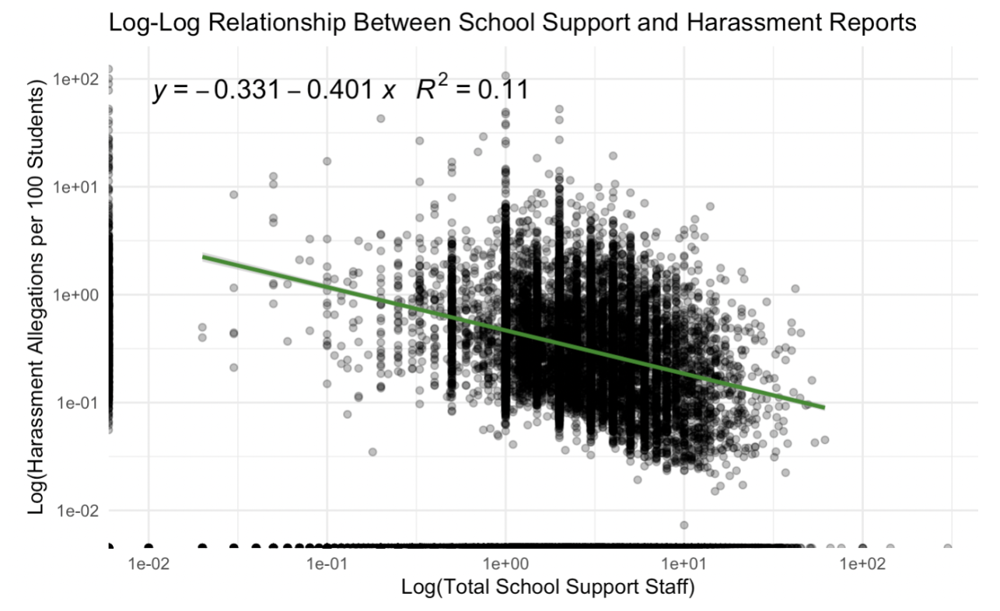

How we are continuing our EDA:
We are continuing our exploratory data analysis by organizing our results at both the national and state levels to identify broader trends as well as regional differences. In addition, we are planning to incorporate data on student suspensions to provide a deeper perspective on school climate and disciplinary practices, which may help contextualize other educational outcomes in our dataset. This added layer of analysis aims to uncover new patterns and strengthen the foundation for our final thesis.
Thesis:
Racially-based harassment in U.S. schools remains persistently high across all states, highlighting a nationwide equity challenge in educational environments. However, our analysis reveals a consistent inverse relationship between the level of school-based support—such as counselors, psychologists, and security staff—and the frequency of race-related harassment incidents. These findings suggest that strengthening student support infrastructure may play a critical role in reducing race-based harassment and fostering safer, more inclusive learning environments. 
To explore the relationship between school support staffing and reported harassment, we constructed a log-log regression model using total school support (sum of counselors, psychologists, and security guards) and reported harassment allegations per 100 enrolled students. The resulting regression line (𝑦 = −0.331 − 0.401𝑥) indicated a negative association, with an R² of 0.11, suggesting that higher levels of student support staff are weakly but significantly associated with lower harassment rates. While the model explains only a modest portion of the variance, this trend aligns with theories that greater support infrastructure may contribute to safer school climates. Nonetheless, causality cannot be inferred due to the observational nature of the data.
How we are planning to polish our visualizations:
To polish our visualizations, we plan to use the ggpubr package to enhance our visualizations by adding informative titles, clear axis labels, and publication-ready themes. We’ll also incorporate statistical annotations (e.g., significance stars) and customized color palettes to make the plots more interpretable and visually appealing. This will help effectively communicate key patterns and support our thesis.
We are also planning to use the gt package to create clean, well-formatted tables that clearly present our summary statistics and model results. This will include adding descriptive titles, column labels, and footnotes where needed. We are also planning to apply formatting features like bold text, color coding, and number precision to highlight key values and improve readability.